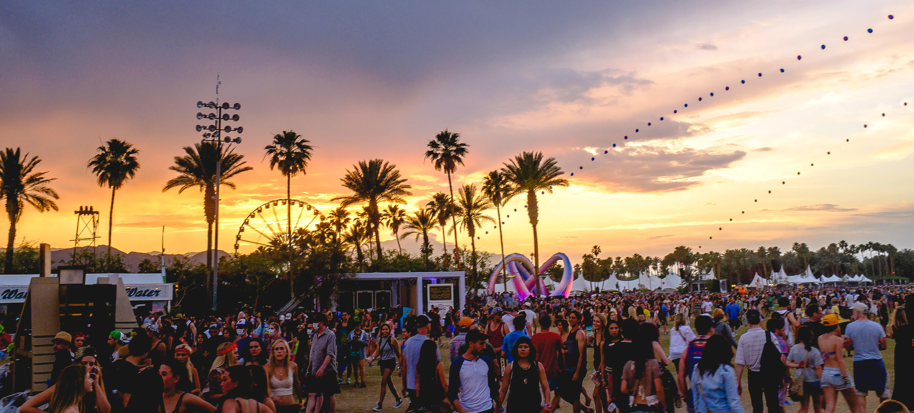
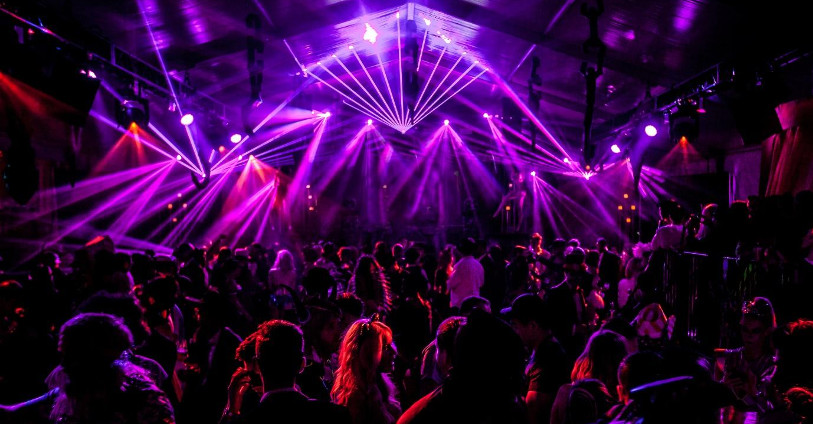
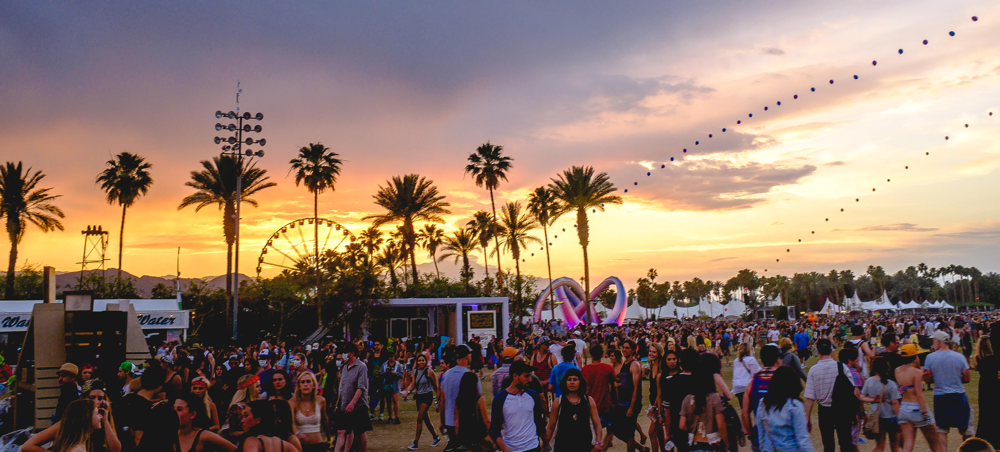
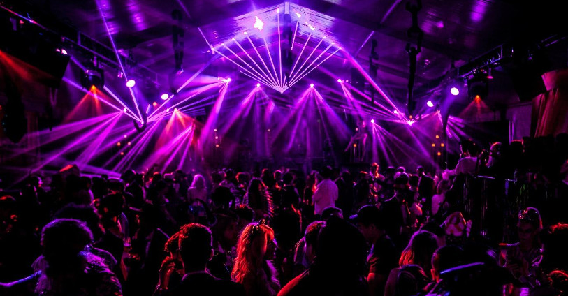

Bringing the best beats to your party!
Bringing the best beats to your party!
Ich bin Noah Weger, besser bekannt als DJ Weger, und ich liebe es, die besten Beats auf die Tanzfläche zu bringen. Mit jahrelanger Erfahrung in der Musikindustrie sorge ich dafür, dass jede Party unvergesslich wird. Meine musikalische Reise begann in der Kindheit und führte mich von kleinen privaten Feiern bis zu großen Festivals. Ich mische verschiedene Genres, von House und Techno bis Hip-Hop und Pop, um mich an die Wünsche meines Publikums anzupassen und einzigartige Erlebnisse zu schaffen.
Neben dem Auflegen arbeite ich als Musikproduzent und habe eigene Tracks veröffentlicht, die breite Anerkennung gefunden haben. Meine Produktionen zeichnen sich durch rhythmische Innovationen und eingängige Melodien aus, die ich in meine DJ-Sets einfließen lasse. Die Zusammenarbeit mit anderen Künstlern und Veranstaltern erweitert mein Netzwerk und inspiriert mich kontinuierlich.
Ob in Clubs, auf Hochzeiten, Firmenfeiern oder öffentlichen Events – mein Ziel ist es, Menschen durch Musik zu verbinden und besondere Momente zu schaffen. Als DJ Weger stehe ich für Qualität, Leidenschaft und die Kunst, jede Veranstaltung einzigartig zu machen.
Hier findest du eine Auswahl meiner neuesten Mixes und Tracks.
Zu meinem Soundcloud Account!
Schau dir meine kommenden Auftritte an und buche mich für dein nächstes Event!
 



Email:
noah.weger123@gmail.comTelefon:
324 581 0432Insta:
Zu meinem Insta!